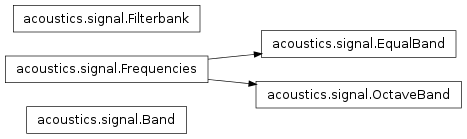
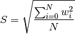
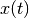
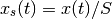
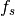
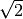
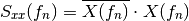

Signal¶
The signal module constains all kinds of signal processing related functions.

Filtering¶
- acoustics.signal.butter_bandpass_filter(data, lowcut, highcut, fs, order=3)[source]¶
Butterworth bandpass filter.
Parameters: - data – data
- lowcut – Lower cut-off frequency
- highcut – Upper cut-off frequency
- fs – Sample frequency
- order – Order
- acoustics.signal.convolve(signal, ltv, mode='full')[source]¶
Perform convolution of signal with linear time-variant system ltv.
Parameters: - signal – Vector representing input signal
 .
. - ltv – 2D array where each column represents an impulse response
- mode – ‘full’, ‘valid’, or ‘same’. See np.convolve() for an explanation of the options.
The convolution of two sequences is given by

This can be written as a matrix-vector multiplication

where
 is a Toeplitz matrix in which each column represents an impulse response.
In the case of a linear time-invariant (LTI) system, each column represents a time-shifted copy of the first column.
In the time-variant case (LTV), every column can contain a unique impulse response, both in values as in size.
is a Toeplitz matrix in which each column represents an impulse response.
In the case of a linear time-invariant (LTI) system, each column represents a time-shifted copy of the first column.
In the time-variant case (LTV), every column can contain a unique impulse response, both in values as in size.This function assumes all impulse responses are of the same size. The input matrix ltv thus represents the non-shifted version of the Toeplitz matrix.
- signal – Vector representing input signal
Windowing¶
- acoustics.signal.window_scaling_factor(window)[source]¶
Calculate window scaling factor.
Parameters: window – Window. When analysing broadband (filtered noise) signals it is common to normalise the windowed signal so that it has the same power as the un-windowed one.

- acoustics.signal.apply_window(x, window)[source]¶
Apply window to signal.
Parameters: - x – Instantaneous signal .
- window – Vector representing window.
Returns: Signal with window applied to it.

where
 is the window scaling factor. See also window_scaling_factor().
is the window scaling factor. See also window_scaling_factor().
Spectra¶
Different types of spectra exist.
- acoustics.signal.amplitude_spectrum(x, fs, N=None)[source]¶
Amplitude spectrum of instantaneous signal .
Parameters: - x – Instantaneous signal .
- fs – Sample frequency .
- N – Amount of FFT bins.
The amplitude spectrum gives the amplitudes of the sinusoidal the signal is built up from, and the RMS (root-mean-square) amplitudes can easily be found by dividing these amplitudes with .
The amplitude spectrum is double-sided.
- acoustics.signal.auto_spectrum(x, fs, N=None)[source]¶
Auto-spectrum of instantaneous signal .
Parameters: - x – Instantaneous signal .
- fs – Sample frequency .
- N – Amount of FFT bins.
The auto-spectrum contains the squared amplitudes of the signal. Squared amplitudes are used when presenting data as it is a measure of the power/energy in the signal.

The auto-spectrum is double-sided. For a single-sided autospectrum, see single_sided_auto_spectrum().
- acoustics.signal.power_spectrum(x, fs, N=None)[source]¶
Power spectrum of instantaneous signal .
Parameters: - x – Instantaneous signal .
- fs – Sample frequency .
- N – Amount of FFT bins.
The power spectrum, or single-sided autospectrum, contains the squared RMS amplitudes of the signal.
A power spectrum is a spectrum with squared RMS values. The power spectrum is calculated from the autospectrum of the signal.
- acoustics.signal.density_spectrum(x, fs, N=None)[source]¶
Density spectrum of instantaneous signal .
Parameters: - x – Instantaneous signal .
- fs – Sample frequency .
- N – Amount of FFT bins.
A density spectrum considers the amplitudes per unit frequency. Density spectra are used to compare spectra with different frequency resolution as the magnitudes are not influenced by the resolution because it is per Hertz. The amplitude spectra on the other hand depend on the chosen frequency resolution.
Frequency bands¶
- class acoustics.signal.Band(center, lower, upper, bandwidth=None)[source]¶
Bases: object
Frequency band object.
- bandwidth = None¶
Bandwidth.
- center = None¶
Center frequency.
- lower = None¶
Lower frequency.
- upper = None¶
Upper frequency.
- class acoustics.signal.Frequencies(center, lower, upper, bandwidth=None)[source]¶
Bases: object
Object describing frequency bands.
- bandwidth = None¶
Bandwidth.
- center = None¶
Center frequencies.
- lower = None¶
Lower frequencies.
- upper = None¶
Upper frequencies.
- class acoustics.signal.EqualBand(center=None, fstart=None, fstop=None, nbands=None, bandwidth=None)[source]¶
Bases: acoustics.signal.Frequencies
Equal bandwidth spectrum. Generally used for narrowband data.
- class acoustics.signal.OctaveBand(center=None, fstart=None, fstop=None, nbands=None, fraction=1, reference=1000.0)[source]¶
Bases: acoustics.signal.Frequencies
Fractional-octave band spectrum.
- fraction = None¶
Fraction of fractional-octave filter.
- reference = None¶
Reference center frequency.
- acoustics.signal.integrate_bands(data, a, b)[source]¶
Reduce frequency resolution of power spectrum. Merges frequency bands by integration.
Parameters: - data – Vector with narrowband powers.
- a – Instance of Frequencies.
- b – Instance of Frequencies.
Note
Needs rewriting so that the summation goes over axis=1.
 .
.Conversion¶


Other¶
- class acoustics.signal.Filterbank(frequencies, sample_frequency=44100, order=3)[source]¶
Bases: object
Fractional-Octave filter bank.
Note
For high frequencies the filter coefficients are wrong for low frequencies. Therefore, to improve the response for lower frequencies the signal should be downsampled. Currently, there is no easy way to do so within the Filterbank.
- filtfilt(signal)[source]¶
Filter signal with filterbank. Returns a list consisting of a filtered signal per filter.
Note
This function uses scipy.signal.filtfilt() and therefore has a zero-phase response.
- frequencies = None¶
Frequencies object.
See also Frequencies and subclasses.
Note
A frequencies object should have the attributes center, lower and upper.
- lfilter(signal)[source]¶
Filter signal with filterbank.
Note
This function uses scipy.signal.lfilter().
- order = None¶
Filter order of Butterworth filter.
- plot_response(filename=None)[source]¶
Plot frequency response.
Note
The follow phase response is obtained in case lfilter() is used. The method filtfilt() results in a zero-phase response.
- acoustics.signal.ir2fr(ir, fs, N=None)[source]¶
Convert impulse response into frequency response. Returns single-sided RMS spectrum.
Parameters: - ir – Impulser response
- fs – Sample frequency
- N – Blocks
Calculates the positive frequencies using np.fft.rfft(). Corrections are then applied to obtain the single-sided spectrum.
Note
Single-sided spectrum. Therefore, the amount of bins returned is either N/2 or N/2+1.